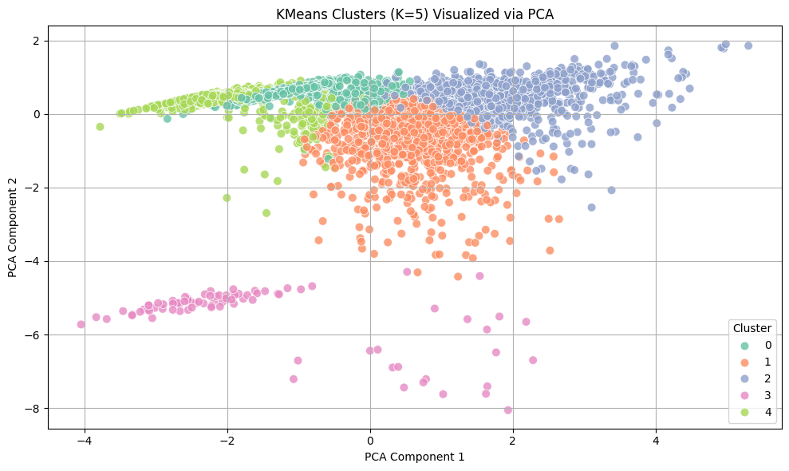
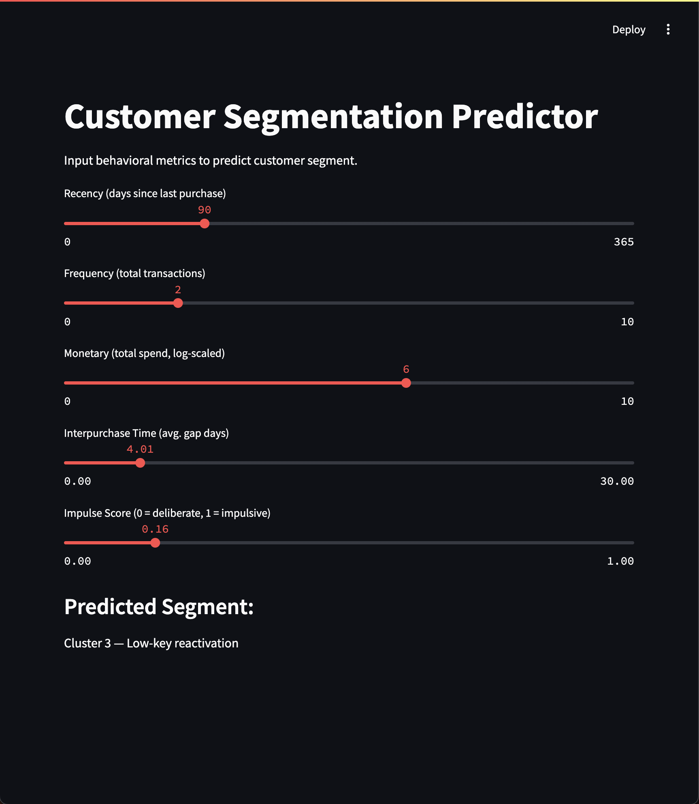

Problem
Standard RFM metrics for UK retail data were insufficient to capture nuanced repeat purchase behaviors and predict future customer value. This limitation led to inefficient marketing campaigns and missed personalization opportunities, as diverse customer needs were not being adequately addressed.
Action
- Advanced Feature Engineering for Behavioral Insights: Beyond RFM, implemented Interpurchase Time & Impulse Score (2-day repurchases) on 541,909 transactions for deeper pattern understanding.
- Data-Driven Customer Segmentation: Employed KMeans clustering (k=5 via Elbow/Silhouette) to define distinct customer segments based on behavioral traits.
- Simulated Emotion Analysis for Deeper Understanding: Designed methodology to simulate user feedback per segment; conducted VADER sentiment analysis for quantifiable emotional tone.
- Actionable UX/Marketing Strategy Development: Mapped personalized UX/marketing strategies (messaging, offers, interaction frequencies) to each segment's unique behavioral/emotional traits.
- Operationalization through Real-time Deployment: Built & deployed a Streamlit app for real-time customer segment prediction, enabling dynamic personalization.
Result
- Holistic Customer Understanding: Identified 5 behaviorally & emotionally distinct customer clusters; provided comprehensive, actionable view.
- Enhanced Personalization Capability: Developed personalized UX/marketing strategies for each cluster; enabled more targeted, effective engagement.
- Real-time Strategic Deployment: Built a real-time customer segment classifier (Streamlit app); automated user categorization for dynamic personalization at scale.
- Deployable Framework for Continuous Optimization: Delivered a full-cycle segmentation pipeline as a deployable framework for continuous targeting, interpretation, UX planning, & operationalization.

Figure 01: Customer Clusters by Behavioral Features

Figure 02: Real-time Customer Segmentation App
Report
📍 Notebook:
HERE
📍 Real-time clustering app:
HERE
📌 Dataset: UCI Online Retail Dataset (541,909 records)